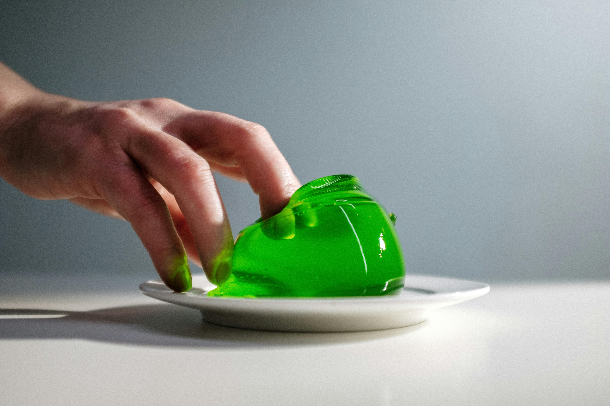

In 1984, Terry Wallis had an accident that caused him to live in a minimally conscious state for 19 years. A minimally conscious state is different from a vegetative state or locked-in syndrome in the sense that the patient indicates some level of awareness. There are usually small but visible responses to yes-or-no questions, indications of emotional awareness, and reactions to pain or noise. However, the patient is not conscious enough to form conversations or move.
The doctors predicted that Terry would stay in a minimally conscious state indefinitely. The brain was damaged to the extent that it was unrecoverable. Fortunately for Terry’s family, they were wrong. After 19 years, Terry showed indications of improvement. In the span of a week, he was able to speak, move, and recognize his then-20-year-old daughter.
The reason for this change was not any medication or treatment. It was inside Terry. The doctors had overlooked a quite powerful ability of the brain itself. Apparently, his brain was improving and rewiring itself for 19 years; the doctors just didn’t realize. This event happened at a time when the plasticity of the brain was recently becoming popular. Since then, it has been considered a fundamental property of the brain, where it’s recognized that every type of cognitive ability such as consciousness, memory, intelligence, reasoning, problem-solving, etc. is greatly linked to it.
You may be thinking, what an incredibly powerful mechanism that could change how we see the world, only if we could find a way to understand and harness it and apply it to our everyday life successfully. I totally agree with you.
So How Does Neuroplasticity Work?
In short, neural plasticity is the functional or structural changes in the brain. Neurons, the cells in your nervous system, have arm-like structures called dendrites and synapses, and they are the real reason for these changes. They use these structures to send information to each other. One neuron forms average of 7000 connections. This number varies, but the important thing is that the neuron has the potential to connect to that many other neurons.
Something scientists have realized in the past century is that these arms are quite flexible. They can stretch out to other cells, they can grow new arms, or they can retract the existing ones.
The formation of new connections drastically affects cognitive abilities. The neuronal pathways in the brain are the place of creation for every cognitive ability you can think of. Memory formation is due to changes in the structure of the neurons, motor skills are strengthened by it, and intelligence shows correlations (positive and negative) with the strength of the neural network. Your brain is mostly defined by the connections between neurons, and the fact that these connections can change shows how malleable you are.
The Science of it All
Because plasticity has an inclusive definition (any structural or functional change), the mechanisms that cause it are also various. One of these definitions includes the change in the synapse. The strengthening or weakening of these synapses helps reshape the neural networks that help your brain function. Memory formation is an example of the effect these changes have on you.
Another way is to change the neurons structurally. The length and the connections between their arms (dendrites or axons) further affect cognition. You can think of it as a billiard ball hitting another billiard ball. Along with the force the ball applies to the other, the number of balls it hits is also important. If it hits three balls at the same time, then the outcome will be drastically different than if it hits a single ball. This kind of plasticity is the number of balls a neuron hits.
Along with these two main changes that happen in the brain, there can also be mechanisms that affect the speed of the signal or the excitability of the neuron. One major idea that is quite debated is neurogenesis. This is the process of making completely new neurons. It is a powerful type of plasticity but is argued to be quite scarce in the brain.

When Does It Happen, How Do We Trigger It?
Unlike the common belief, plasticity is not always a great thing. PTSD, epilepsy, or addiction are all caused by extreme changes in synaptic strength or functional change. This is the reason evolution created a brain that is not completely fluid and plastic.
There are ways to trigger plasticity in a way that affects you mostly positively. Learning more facts or improving your skills is just science, after all. As boring as it may sound, repetition is one of them. The more a neuron is triggered, the stronger its signals get. To trigger a neuron, you need to repeat the action or the fact over and over again. This is why practice makes perfect.
Another trick is to use neurotransmitters as support. Increased stimulation of chemicals like dopamine and norepinephrine can also trigger synapse changes. You can listen to a happy song to increase dopamine levels or study after a quick run to increase norepinephrine. Have you ever heard of peripatetic teaching? It is a teaching style that Aristotle basically patented, where the education happens on foot. The teacher explains the lecture while walking around because they believed it helped with learning. They were right!
Basically…
Neuroplasticity is a crucial feature of the brain that helps with forming everything about our personality. It is a reason for hope to improve further—not in generations but in our lifetimes. Whatever you are aspiring or struggling to do, this ability of the brain is insurance that you can probably do better.